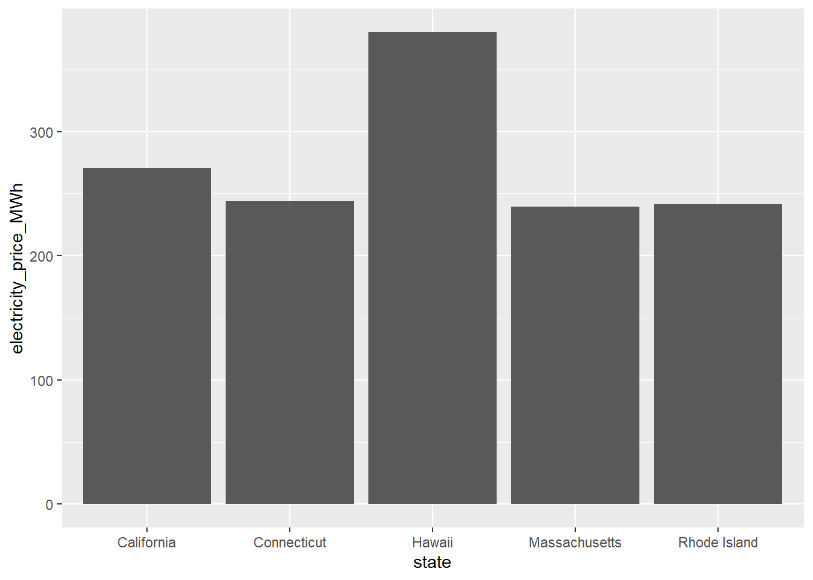
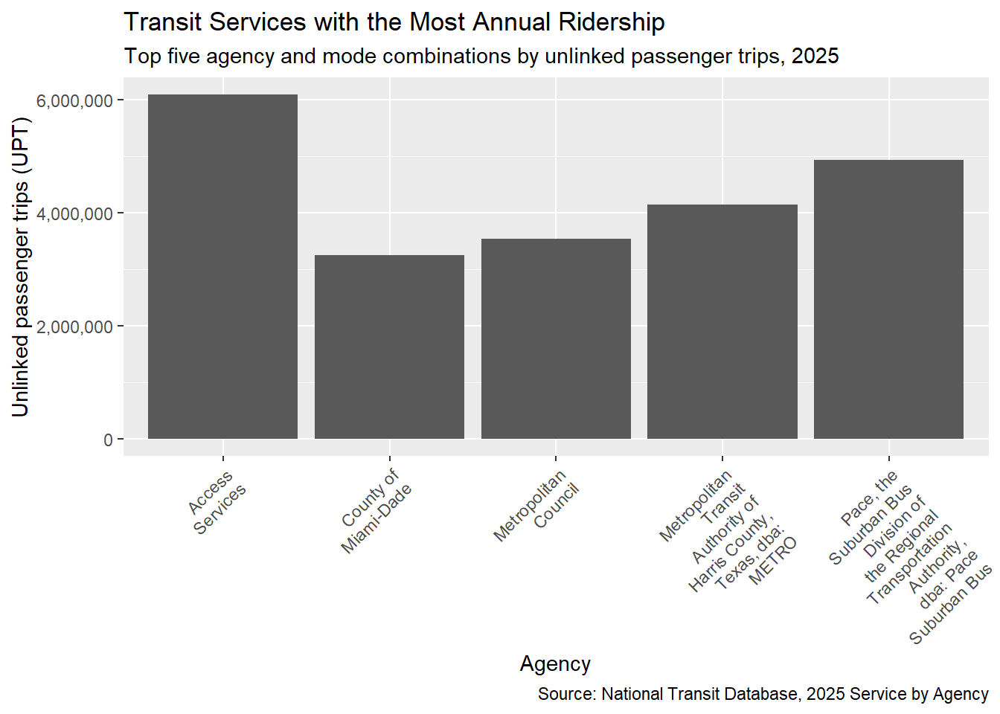
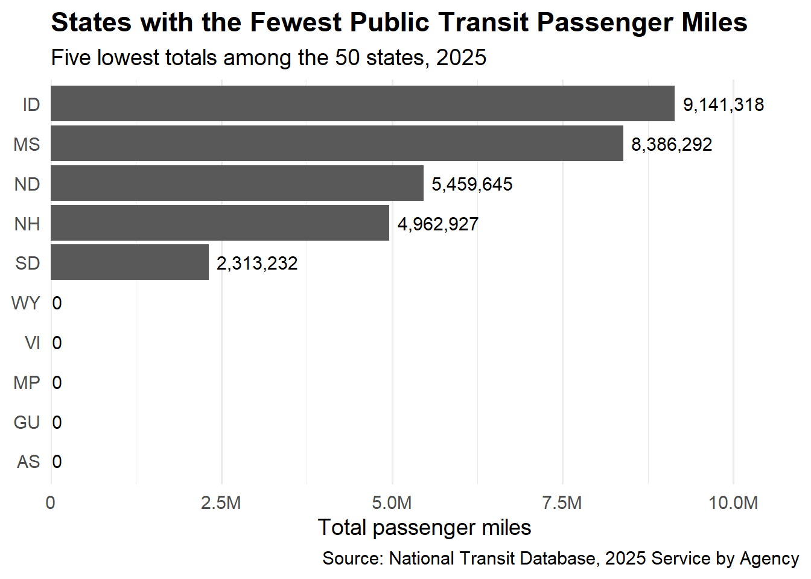
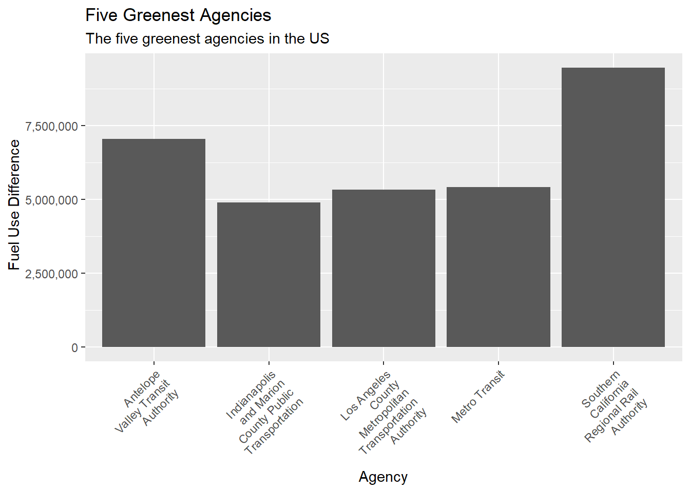
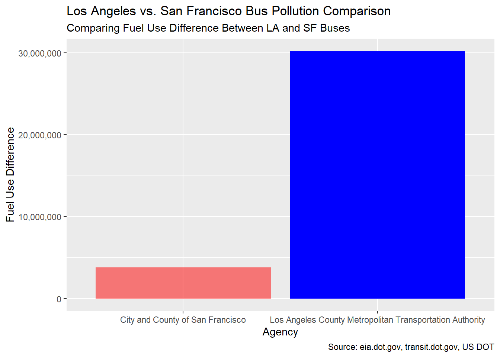

Mini-Project 02 - Identifying Environmentally Responsible US Public Transit Systems
Author
suekelj
Introduction
In this mini-project, I intend to demonstrate my skills at Data Integration/Data Visualization in an analysis of Transit/Environmetrics data.
I will be analyzing data from the US Energy Information Administration, and the US Department of Transportation. The analysis will include states and their fuel usage, public transit agencies across the country and analyze their fuel usage and passenger miles, and ridership comparisons.
At the end of my analysis, I will give awards to the greenest agency, and the worst polluting agency.
Data Acquisition and Preparation
Code
library(tidyverse)library(stringr)library(httr2)library(rvest)get_eia_sep <-function(state, abbr){library(tidyverse)library(stringr)library(httr2)library(rvest)library(fs) state_formatted <-str_to_lower(state) |>str_replace_all("\\s", "") dir_name <- fs::path("data", "mp02") file_name <- fs::path(dir_name, state_formatted) fs::dir_create(dir_name, recurse=TRUE)if(!fs::file_exists(file_name)){ BASE_URL <-"https://www.eia.gov" RESPONSE <-request(BASE_URL) |>req_url_path("electricity", "state", state_formatted) |>req_headers(`User-Agent`="Mozilla/5.0 (Macintosh; Intel Mac OS X 10.15; rv:149.0) Gecko/20100101 Firefox/149.0" ) |>req_retry(max_tries =4, ) |>req_perform(file_name)resp_check_status(RESPONSE) } TABLE <-read_html(file_name) |>html_element("table") |>html_table() |>mutate(Item =str_to_lower(Item))if("U.S. rank"%in%colnames(TABLE)){ TABLE <- TABLE |>rename(Rank =`U.S. rank`) } CO2_MWh <- TABLE |>filter(Item =="carbon dioxide (lbs/mwh)") |>pull(Value) |>str_replace_all(",", "") |>as.numeric() PRIMARY <- TABLE |>filter(Item =="primary energy source") |>pull(Rank) RATE <- TABLE |>filter(Item =="average retail price (cents/kwh)") |>pull(Value) |>as.numeric() GENERATION_MWh <- TABLE |>filter(Item =="net generation (megawatthours)") |>pull(Value) |>str_replace_all(",", "") |>as.numeric()data.frame(CO2_MWh = CO2_MWh, primary_source = PRIMARY,electricity_price_MWh = RATE *10, # / 100 cents to dollars &# * 1000 kWh to MWH generation_MWh = GENERATION_MWh, state = state, abbreviation = abbr )}EIA_SEP_REPORT <-map2(state.name, state.abb, get_eia_sep) |>list_rbind()load_ntd_energy <-function(){library(readxl)library(httr2)library(tidyverse)library(fs)# Create 'data/mp02' directory if not already present DATA_DIR <- fs::path("data", "mp02") fs::dir_create(DATA_DIR, recurse=TRUE) NTD_ENERGY_FILE <- fs::path(DATA_DIR, "2025_ntd_energy.xlsx")if(!fs::file_exists(NTD_ENERGY_FILE)){library(httr2)request("https://www.transit.dot.gov/") |>req_url_path("sites","fta.dot.gov","files","2026-09","2025 Energy Consumption_260806.xlsx") |>req_headers(`User-Agent`="Mozilla/5.0 (Macintosh; Intel Mac OS X 10.15; rv:149.0) Gecko/20100101 Firefox/149.0") |>req_perform(NTD_ENERGY_FILE) }if(file.info(NTD_ENERGY_FILE)$size <1e4){cat("I was unable to download the NTD Energy File. Please try again.\n")stop("Download failed. Please delete the corrupted file by running `unlink('data/mp02/2025_ntd_energy.xlsx')` and try again.") } to_numeric_fill_0 <-function(x){ x <-if_else(x =="-", NA, x)replace_na(as.numeric(x), 0) }read_excel(NTD_ENERGY_FILE) |>select(-c(`Reporter Type`, `Reporting Module`, `Gallons of Other Fuel`, `Other Fuel Description`)) |>mutate(across(-c(`Agency Name`, `Mode`,`TOS`), to_numeric_fill_0)) |>group_by(`NTD ID`, `Mode`, `Agency Name`) |>summarize(across(where(is.numeric), sum), .groups ="keep") |>mutate(ENERGY =sum(c_across(c(where(is.numeric))))) |>filter(ENERGY >0) |>select(-ENERGY) |>ungroup()}NTD_ENERGY <-load_ntd_energy()load_ntd_service <-function(){library(httr2)library(tidyverse)library(fs)# Create 'data/mp02' directory if not already present DATA_DIR <- fs::path("data", "mp02") fs::dir_create(DATA_DIR, recurse=TRUE) NTD_SERVICE_FILE <- fs::path(DATA_DIR, "2025_ntd_service.csv")if(!fs::file_exists(NTD_SERVICE_FILE)){library(httr2)request("https://data.transportation.gov/resource/4fir-qbim.csv") |>req_url_query(`$query`=paste("SELECT `_5_digit_ntd_id` AS `NTD_ID`", "`max_agency` AS `AGENCY`","`max_reporter_type` AS `reporter_type`","`max_organization_type` AS `organization_type`","`max_city` AS `city`","`max_state` AS `state`","`mode`","`type_of_service`","`max_primary_uza_code` as `uza_code`","`max_primary_uza_name` as `uza_name`","`max_primary_uza_area_sq_miles` as `uza_sq_miles`","`max_primary_uza_population` as `uza_population`","`max_service_area_sq_miles` as `service_area_sq_miles`","`max_service_area_population` as `service_area_population`","`questionable_record` as `flagged_likely_inaccurate`","`sum_unlinked_passenger_trips_upt` + `sum_ada_upt` + `sum_sponsored_service_upt` as `total_upt`","`sum_passenger_miles` WHERE caseless_one_of(`report_year`, '2025') limit 50000", sep=",")) |>req_headers(`User-Agent`="Mozilla/5.0 (Macintosh; Intel Mac OS X 10.15; rv:149.0) Gecko/20100101 Firefox/149.0") |>req_perform(NTD_SERVICE_FILE) }if(file.info(NTD_SERVICE_FILE)$size <1e4){cat("I was unable to download the NTD Service File. Please try again.\n")stop("Download failed. Please delete the corrupted file by running `unlink('data/mp02/2025_ntd_service.xlsx')` and try again.") }read_csv(NTD_SERVICE_FILE) |>mutate(flagged_likely_inaccurate =!is.na(flagged_likely_inaccurate))}NTD_SERVICE <-load_ntd_service()
The 5 states that have the most expensive retail electricity are listed in the graph below:
Code
library(scales)#1. Which 5 states have the most expensive retail electricity? (Graph)library(ggplot2)expensive_electricity <- EIA_SEP_REPORT |>arrange(desc(electricity_price_MWh)) |>head(5) ggplot(expensive_electricity, aes(x = state, y=electricity_price_MWh )) +geom_col() +labs(title ="Most Expensive Retail Electricity",subtitle ="Top five states and Electricity Price",x ="State",y ="Electricity Price per MWh")

It’s not surprising to see Hawaii is the state with the most expensive electricity prices. It’s far out in the Pacific Ocean, they use petroleum, and, after a quick search, the petroleum they rely on is imported. Another no surprise is California. After another search, electric companies in California invest heavily in wildfire prevention and maintaining aging infrastructure, and the costs of that are passed on to customers. It’s no wonder why Pacific Gas & Electric customers (from Humboldt in NorCal to Santa Barbara in SoCal) are outraged at PG&E’s audacity to increase prices despite their constant outages, having caused an explosion in San Bruno, CA in 2011, and causing wildfires.
The states with the dirtiest electricity mix are listed below:
Code
#2. Which 5 states have the ‘dirtiest’ electricity mix? (Table)library(gt)dirtiest <- EIA_SEP_REPORT |>arrange(desc(CO2_MWh)) |>head(5) |>select(-abbreviation)dirtiest |>gt() |>tab_header(title="Dirtiest Electricity Mix") |>cols_label(primary_source ="Source",electricity_price_MWh ="Electricity Price per MWh", state ="State",generation_MWh ="Generation per MWh",CO2_MWh ="CO2 per MWh" )
Dirtiest Electricity Mix
CO2 per MWh
Source
Electricity Price per MWh
Generation per MWh
State
1912
Coal
110.5
50594818
West Virginia
1744
Coal
100.7
66950848
Kentucky
1724
Coal
91.4
40709150
Wyoming
1456
Coal
110.6
66875710
Missouri
1426
Petroleum
380.0
9160979
Hawaii
Again another no big surprise that the states with the dirtiest mix are states that use coal. WV and KY are definitely the states that come to mind when thinking of coal mining. After a quick search, I discovered that Wyoming is the largest coal-producing state in the US and while Missouri is not currently a coal mining state, it was historically. And again Hawaii is there from their reliance on petroleum.
The three rarest primary energy sources in the US are listed below
Code
#4. What are the three rarest primary energy sources in the US? rarest_sources <- EIA_SEP_REPORT |>group_by(primary_source) |>summarize(count =n()) |>arrange(count) |>head(3)#What is the associated cost of electricity associated with each source and in what states are they used? (Table answer)rarest_sources |>inner_join(EIA_SEP_REPORT, join_by(primary_source)) |>select(primary_source, electricity_price_MWh, state) |>gt() |>tab_header(title="Rarest Primary Energy Sources") |>cols_label(primary_source ="Source",electricity_price_MWh ="Electricity Price per MWh", state ="State" )
Rarest Primary Energy Sources
Source
Electricity Price per MWh
State
Petroleum
380.0
Hawaii
Hydroelectric
95.1
Idaho
Hydroelectric
111.1
Oregon
Hydroelectric
184.1
Vermont
Hydroelectric
101.3
Washington
Wind
93.4
Iowa
Wind
112.1
Kansas
Wind
91.8
New Mexico
Wind
108.7
South Dakota
It’s not that surprising that hydroelectric is one of the rarest, as that seems to be more geographically-driven. I can’t imagine the deserts or the mountainous areas to have a lot of hydroelectricity generation. I did some quick searches into Idaho and Vermont’s usage of hydroelectric, and these states have dams and rivers that generate about 46% and 51% of each state’s electricity respectively. And of course Oregon and Washington have tons fo rivers running through each state. I am surprised that wind is rare, because wind in general is everywhere even the deserts in California. Another big surprise is the petroleum use in Hawaii. For a state surrounded by water and with so much ocean breezes, I’m surprised that wind and hydroelectric aren’t utilized more. Or even solar. But I guess limited land space limits their capacity for wind farms.
The five transit agencies that used the most gallons of fuel of all sources are:
Code
#1. Which five transit agencies used the most gallons of fuel (all sources) and how did it breakdown by type? (Table)# sum acrossmost_fuel_agencies <- NTD_ENERGY |>group_by(`Agency Name`) |>summarise(across(c(`Gallons of Bio-Diesel`,`Gallons of Bunker Fuel`,`Gallons of Compressed Natural Gas`,`Gallons of Diesel Fuel` ,`Gallons of Ethanol` ,`Gallons of Gasoline`, `Gallons of Kerosene` ,`Gallons of Liquified Nat Gas`,`Gallons of Liquified Petroleum Gas`), sum, na.rm =TRUE)) |>mutate(total =rowSums(across(where(is.numeric)), na.rm =TRUE)) |>arrange(desc(total)) |>head(5) |>mutate(across(where(is.numeric), label_comma())) most_fuel_agencies
# A tibble: 5 × 11
`Agency Name` Gallons of Bio-Diese…¹ Gallons of Bunker Fu…²
<chr> <chr> <chr>
1 New Jersey Transit Corporation 0 0
2 MTA New York City Transit 0 0
3 Los Angeles County Metropolitan… 0 0
4 Northeast Illinois Regional Com… 0 0
5 Massachusetts Bay Transportatio… 0 0
# ℹ abbreviated names: ¹`Gallons of Bio-Diesel`, ²`Gallons of Bunker Fuel`
# ℹ 8 more variables: `Gallons of Compressed Natural Gas` <chr>,
# `Gallons of Diesel Fuel` <chr>, `Gallons of Ethanol` <chr>,
# `Gallons of Gasoline` <chr>, `Gallons of Kerosene` <chr>,
# `Gallons of Liquified Nat Gas` <chr>,
# `Gallons of Liquified Petroleum Gas` <chr>, total <chr>
Code
most_fuel_agencies |>gt()
Agency Name
Gallons of Bio-Diesel
Gallons of Bunker Fuel
Gallons of Compressed Natural Gas
Gallons of Diesel Fuel
Gallons of Ethanol
Gallons of Gasoline
Gallons of Kerosene
Gallons of Liquified Nat Gas
Gallons of Liquified Petroleum Gas
total
New Jersey Transit Corporation
0
0
1,521,492
38,144,027
0
2,055,895
0
0
0
41,721,414
MTA New York City Transit
0
0
6,328,381
30,217,934
0
4,270,146
0
0
0
40,816,461
Los Angeles County Metropolitan Transportation Authority
These five agencies used the most gallons of fuel of all sources. The top agency to use the most fuel is NJT, followed very closely by New York MTA.The next agency to use the most fuel is LA County MTA with almost ten million gallons less than NY MTA. These agencies also happen to be the ones that move the most people, and thus have large bus and rail fleets that use more fuel.
Code
#3. What is the least commonly used fuel source for US public transit? (Inline)least_common_fuel <- NTD_ENERGY |>summarise(across(c(`Gallons of Bio-Diesel`,`Gallons of Bunker Fuel`,`Gallons of Compressed Natural Gas`,`Gallons of Diesel Fuel` ,`Gallons of Ethanol` ,`Gallons of Gasoline`, `Gallons of Kerosene` ,`Gallons of Liquified Nat Gas`,`Gallons of Liquified Petroleum Gas` ), sum, na.rm =TRUE)) |>pivot_longer(cols=everything()) |>filter_out(value ==0) |>slice_min(value) |>pull(name)#arrange(value) |> head(1)least_common_fuel <-strsplit(least_common_fuel, split =" ")[[1]][-c(1, 2)]original_string <-str_flatten(least_common_fuel, collapse =" ")#least_common_fuel <- paste(least_common_fuel[[1]], collapse = " ")least_common_fuel
[1] "Liquified" "Nat" "Gas"
The least commonly used fuel source for US public transit is Liquified, Nat, Gas. I did some light searching again and found that while liquefied natural gas (LNG) is not a less common fuel source in general, I can see how it can be so for public transit in the US. LNG requires specialized cooling and infrastructure which limits its use.
The five transit services that have the most UPT annually are :
Code
library(dplyr)# 1.Which five transit services have the most UPT annually? (Graph)most_upt <- NTD_SERVICE |>arrange(desc(total_upt)) |>head(5) most_upt
# A tibble: 5 × 17
NTD_ID AGENCY reporter_type organization_type city state mode
<chr> <chr> <chr> <chr> <chr> <chr> <chr>
1 90157 Access Services Full Reporter Independent Publ… El M… CA DR
2 50182 Pace, the Suburban B… Full Reporter Independent Publ… Arli… IL DR
3 60008 Metropolitan Transit… Full Reporter Independent Publ… Hous… TX DR
4 50154 Metropolitan Council Full Reporter City, County or … Sain… MN DR
5 40034 County of Miami-Dade Full Reporter City, County or … Miami FL DR
# ℹ 10 more variables: type_of_service <chr>, uza_code <chr>, uza_name <chr>,
# uza_sq_miles <dbl>, uza_population <dbl>, service_area_sq_miles <dbl>,
# service_area_population <dbl>, flagged_likely_inaccurate <lgl>,
# total_upt <dbl>, sum_passenger_miles <dbl>
Code
ggplot(most_upt, aes(x=AGENCY, y=total_upt)) +geom_col()+scale_y_continuous(labels =label_comma())+theme(axis.text.x =element_text(angle =45, vjust =1, hjust =1))+labs(title ="Transit Services with the Most Annual Ridership",subtitle ="Top five agency and mode combinations by unlinked passenger trips, 2025",x ="Agency",y ="Unlinked passenger trips (UPT)",caption ="Source: National Transit Database, 2025 Service by Agency" ) +scale_x_discrete(labels = scales::label_wrap(15))

The five states that have the fewest total miles travelled by public transit are:
Code
# 4. Which five states has the fewest total miles travelled by public transit? (Graph)fewest_pub_transit <- NTD_SERVICE |>group_by(state) |>summarize(total_pub_transit =sum(sum_passenger_miles, na.rm=TRUE)) |>arrange(total_pub_transit) |>head(10)ggplot(fewest_pub_transit,aes(x = total_pub_transit,y =reorder(state, total_pub_transit))) +geom_col() +geom_text(aes(label =comma(total_pub_transit)),hjust =-0.1, size =4) +scale_x_continuous(labels =label_number(scale_cut =cut_short_scale()),expand =expansion(mult =c(0, 0.2))) +labs(title ="States with the Fewest Public Transit Passenger Miles",subtitle ="Five lowest totals among the 50 states, 2025",x ="Total passenger miles",y =NULL,caption ="Source: National Transit Database, 2025 Service by Agency") +theme_minimal(base_size =14) +theme(panel.grid.major.y =element_blank(),plot.title =element_text(face ="bold"))

The dataset also included data from US territories including American Samoa, Guam, Northern Mariana Islands, and US Virgin Islands. Of the 50 states, Wyoming had 0 public transit passenger miles. After doing some quick searching, Wyoming actually does have public transit, so that just means that the actual public transit miles were probably just not recorded for Wyoming. The next state with the least public transit miles is South Dakota. These numbers and states seems legitimate, as I don’t believe these states are known for public transit, neither are they known for being environmentally friendly; but rather known for suburbs and rural areas that are only reachable by private vehicles.
Code
#5. Are all states represented in this data? If no, which ones are missing? #The state.name and state.abb objects built into R may be useful here, as well as the anti_join() function.3 (Inline)NTD_SERVICE |>filter( !(c(state) %in%c(state.abb)) ) |>select(state) |>group_by(state) |>distinct()
# A tibble: 6 × 1
# Groups: state [6]
state
<chr>
1 DC
2 PR
3 VI
4 GU
5 AS
6 MP
All states are represented in the data. The only data missing are from DC, and other US island territories. However, Wyoming has a reported 0 miles in public transit miles. It’s possible that Wyoming is the state that is not represented in the data, because even though Wyoming is not a state that is well known for public transit, it’s not likely that Wyoming has 0 public transit miles.
Task 6
Code
# NTD_ID originally a string. convert to dbl:NTD_SERVICE <- NTD_SERVICE |>mutate(NTD_ID =as.numeric(NTD_ID))# join NTD_ENERGY and NTD_SERVICEenergy_service <-full_join(NTD_ENERGY, NTD_SERVICE, join_by(`NTD ID`== NTD_ID)) |>full_join(EIA_SEP_REPORT, join_by(state==abbreviation))# glimpse(energy_service)energy_service <- energy_service |>select(`NTD ID`,AGENCY, Mode, `Gallons of Bio-Diesel`,`Bio-Diesel Description`,`Gallons of Bunker Fuel`,`Gallons of Compressed Natural Gas`,`Gallons of Diesel Fuel` ,`Kilowatt hours of Electric Battery`,`Kilowatt hours of Electric Propulsion`,`Gallons of Ethanol` ,`Gallons of Gasoline`, `Kilograms of Hydrogen`,`Gallons of Kerosene` ,`Gallons of Liquified Nat Gas`,`Gallons of Liquified Petroleum Gas`, state, CO2_MWh) |>distinct()row_emissions <- energy_service |>group_by(AGENCY, `NTD ID`) |>mutate(total_sum =rowSums(across(c(`Gallons of Bio-Diesel`,`Bio-Diesel Description`,`Gallons of Bunker Fuel`,`Gallons of Compressed Natural Gas`,`Gallons of Diesel Fuel` ,`Kilowatt hours of Electric Battery`,`Kilowatt hours of Electric Propulsion`,`Gallons of Ethanol` ,`Gallons of Gasoline`, `Kilograms of Hydrogen`,`Gallons of Kerosene` ,`Gallons of Liquified Nat Gas`,`Gallons of Liquified Petroleum Gas`)), na.rm =TRUE)) |>distinct()# glimpse(row_emissions)# |> select(`NTD ID`,Mode, AGENCY, total_sum) |> distinct()
Task 6
Code
# Same code -> name mapping used in Task 2 (reuse for both tables)mode_names <-c(HR ="Heavy Rail", DR ="Demand Response", FB ="Ferryboat",MB ="Bus", SR ="Streetcar Rail", TB ="Trolleybus",VP ="Vanpool", CB ="Commuter Bus", RB ="Bus Rapid Transit",LR ="Light Rail", YR ="Hybrid Rail",MG ="Monorail / Automated Guideway", CR ="Commuter Rail",AR ="Alaska Railroad", TR ="Aerial Tramway",IP ="Inclined Plane", CC ="Cable Car")# NTD_SERVICE: one row per agency + mode (sum over type of service)service_by_mode <- NTD_SERVICE |>mutate(NTD_ID =as.numeric(NTD_ID),Mode =coalesce(unname(mode_names[mode]), "Unknown")) |>group_by(NTD_ID, Mode, AGENCY, state) |>summarize(total_upt =sum(total_upt, na.rm =TRUE),sum_passenger_miles =sum(sum_passenger_miles, na.rm =TRUE),.groups ="drop")# Join on BOTH keys; relationship= errors out if any row still duplicatesenergy_service <- NTD_ENERGY |>inner_join(service_by_mode,join_by(`NTD ID`== NTD_ID, Mode),relationship ="one-to-one")# emissions Per UPT and per passenger milesefficiency <- energy_service |>mutate(total_sum =rowSums(pick(starts_with("Gallons"),starts_with("Kilowatt"),starts_with("Kilograms"))),per_upt = total_sum / total_upt,per_pass_mi = total_sum / sum_passenger_miles) |>filter(total_upt >0, sum_passenger_miles >0) |>select(AGENCY, Mode, state, per_upt, per_pass_mi)efficiency
# A tibble: 278 × 5
AGENCY Mode state per_upt per_pass_mi
<chr> <chr> <chr> <dbl> <dbl>
1 King County, dba: King County Metro Dema… WA 0.657 0.145
2 Spokane Transit Authority Dema… WA 0.425 0.102
3 Pierce County Transportation Benefit Area Au… Dema… WA 0.516 0.135
4 Tri-County Metropolitan Transportation Distr… Dema… OR 0.261 0.0592
5 Valley Regional Transit Dema… ID 0.701 0.155
6 City of Longview, dba: RiverCities Transit Dema… WA 0.360 0.234
7 Ben Franklin Transit Dema… WA 0.744 0.115
8 Intercity Transit Dema… WA 0.750 0.258
9 Kitsap County Public Transportation Benefit … Dema… WA 0.721 0.153
10 Whatcom Transportation Authority Dema… WA 0.506 0.172
# ℹ 268 more rows
Awards Metrics
There are two awards I want to give out: The greenest agencies, and the worst polluters.
The Greenest Agencies are the ones that have the highest use of a combination of bio diesel, electric, and hydrogen. The Worst polluters are the opposite: these agencies use more non-renewable fuels (Bunker Fuel, Compressed natural Gas, Diesel, Ethanol, Gasoline, Kerosene, Liquified Natural Gas, and Liquified Petroleum Gas).
I chose bio diesel, electric, and hydrogen to be the markers of “green” fuels because these are renewable and/or biodegradable fuel sources. I’m not familiar with fuel sources in general so I had to do some quick searches on each fuel source in this dataset to be more certain about the renewability of each source.
It’s in a similar vein as to how I chose Bunker Fuel, Compressed natural Gas, Diesel, Ethanol, Gasoline, Kerosene, Liquified Natural Gas, and Liquified Petroleum Gas to be the non-renewable, and thus, the “not green”, fuel sources. While Bunker Fuel, Compressed natural Gas, Diesel, Gasoline, Liquified Natural Gas, and Liquified Petroleum Gas are obviously not “green”, the “green-ness” Ethanol and Kerosene are more dependent on how these fuels are processed and produced (emissions from production), so I decided to put these into the same category as the other non green fuels.
Code
#highest use of a combination of bio diesel, electric, and hydrogen; # and the highest use of a combination of non green fuelsfuel_totals <- NTD_ENERGY |>mutate(`Green Fuels`=rowSums(across(c(`Gallons of Bio-Diesel`,`Kilowatt hours of Electric Battery`,`Kilograms of Hydrogen`)), na.rm =TRUE)) |>mutate(`Not Green Fuels`=rowSums(across(c(`Gallons of Bunker Fuel`,`Gallons of Compressed Natural Gas`,`Gallons of Diesel Fuel` ,`Gallons of Ethanol` ,`Gallons of Gasoline`, `Gallons of Kerosene` ,`Gallons of Liquified Nat Gas`,`Gallons of Liquified Petroleum Gas` )), na.rm =TRUE))|>group_by(`Agency Name`) |>select(`Agency Name`, Mode, `Green Fuels`, `Not Green Fuels`)#fuel_totals
Code
greenest_agencies <- fuel_totals |>mutate(`Fuel Use Difference`=`Green Fuels`-`Not Green Fuels`) |>group_by(`Agency Name`) |>select(`Agency Name`, Mode, `Green Fuels`, `Not Green Fuels`, `Fuel Use Difference`) |>arrange(desc(`Fuel Use Difference`)) |>mutate(`Green Fuels`=comma(`Green Fuels`), `Not Green Fuels`=comma(`Not Green Fuels`), `Fuel Use Difference`=comma(`Fuel Use Difference`))greenest_agencies |>print(n=5)
# A tibble: 1,134 × 5
# Groups: Agency Name [520]
`Agency Name` Mode `Green Fuels` `Not Green Fuels` `Fuel Use Difference`
<chr> <chr> <chr> <chr> <chr>
1 Southern Californ… Comm… 9,466,431 0 9,466,431
2 Antelope Valley T… Bus 7,045,274 0 7,045,274
3 Metro Transit Bus 5,409,347 0 5,409,347
4 Los Angeles Count… Bus … 5,325,173 0 5,325,173
5 Indianapolis and … Bus … 4,904,580 0 4,904,580
# ℹ 1,129 more rows
The award for Greenest Agency goes to Southern California Regional Rail Authority, with a total of 9,466,431 gallons of green fuels used, and 0 gallons of not green fuels used.
Code
least_green <- fuel_totals |>mutate(`Fuel Use Difference`=`Not Green Fuels`-`Green Fuels`) |>group_by(`Agency Name`) |>select(`Agency Name`, Mode, `Green Fuels`, `Not Green Fuels`, `Fuel Use Difference`) |>arrange(desc(`Fuel Use Difference`)) |>mutate(`Green Fuels`=comma(`Green Fuels`), `Not Green Fuels`=comma(`Not Green Fuels`), `Fuel Use Difference`=comma(`Fuel Use Difference`))worst_polluter <- least_green |>head(1)worst_polluter
# A tibble: 1 × 5
# Groups: Agency Name [1]
`Agency Name` Mode `Green Fuels` `Not Green Fuels` `Fuel Use Difference`
<chr> <chr> <chr> <chr> <chr>
1 Los Angeles Count… Bus 204,379 30,410,141 30,205,762
Code
polluter_agency <- worst_polluter |>pull(`Agency Name`)polluter_green_use <- worst_polluter |>pull(`Green Fuels`)polluter_not_green_use <- worst_polluter |>pull(`Not Green Fuels`)polluter_diff <- worst_polluter |>pull(`Fuel Use Difference`)
The award for Worst Polluter goes to Los Angeles County Metropolitan Transportation Authority, with only 204,379 gallons of green fuels used and 30,410,141 gallons of non green fuels used. With a difference of 30,205,762 gallons between green and non green fuels, Los Angeles County Metropolitan Transportation Authority is the worst polluter as it uses much more non green fuels than green fuels.
Final Insights and Deliverable
Code
top_5 <- greenest_agencies |>head(5) |>mutate(across(where(is.character), parse_number))ggplot(top_5, aes(x=`Agency Name`, y=`Fuel Use Difference`)) +geom_col()+scale_y_continuous(labels =label_comma())+theme(axis.text.x =element_text(angle =45, vjust =1, hjust =1))+labs(title ="Five Greenest Agencies",subtitle ="The five greenest agencies in the US",x ="Agency",y =" Fuel Use Difference")+scale_x_discrete(labels = scales::label_wrap(15))

Code
sf_compare <- fuel_totals |>filter( str_detect(`Agency Name`,"San Francisco") & Mode =="Bus") |>mutate(`Fuel Use Difference`=`Not Green Fuels`-`Green Fuels`)la_compare <- worst_polluter |>mutate(across(where(is.character), parse_number))ggplot() +geom_col(data = la_compare, aes(x =`Agency Name`, y =`Fuel Use Difference`), fill ="blue") +geom_col(data = sf_compare, aes(x =`Agency Name`, y =`Fuel Use Difference`), fill ="red", alpha =0.5) +scale_y_continuous(labels =label_comma())+labs(title ="Los Angeles vs. San Francisco Bus Pollution Comparison",subtitle ="Comparing Fuel Use Difference Between LA and SF Buses",caption="Source: eia.dot.gov, transit.dot.gov, US DOT",x ="Agency",y ="Fuel Use Difference")

A ‘reference’ value that makes the winner look particularly impressive, e.g. how did the median agency do on that same metric?
I decided to compare Los Angeles (the worst polluting agency) with San Francisco. I chose San Francisco as it’s my hometown and I am very familiar with the bus and public transit system, and because San Francisco is more known for its public transit system than Los Angeles is so I thought this would be interesting to compare a city with a widespread and widely used system versus a city that is known for suburban sprawl and car dependency.
San Francisco buses are usually hybrid vehicles, with about half of the bus models using overhead wires as power and a new generation battery-powered models. Perhaps it’s because the buses in San Francisco are hybrid electric or battery operated, it’s not so surprising to see that the green and non-green fuel difference is so low compared to Los Angeles. As mentioned previously, fuel difference is calculated as non-green fuel use minus green fuel use.
NoteAI Usage Statement
Gemini was used for coding help on EDA - NTD Energy Usage, prompts 1 and 2 for summing across columns, formatting across columns. Claude was used for Task 6 to fix duplicate rows, fixing graphics.